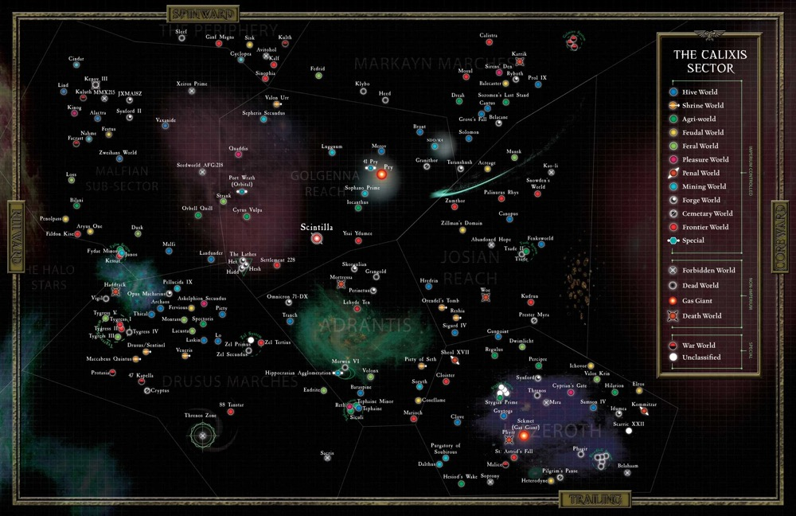
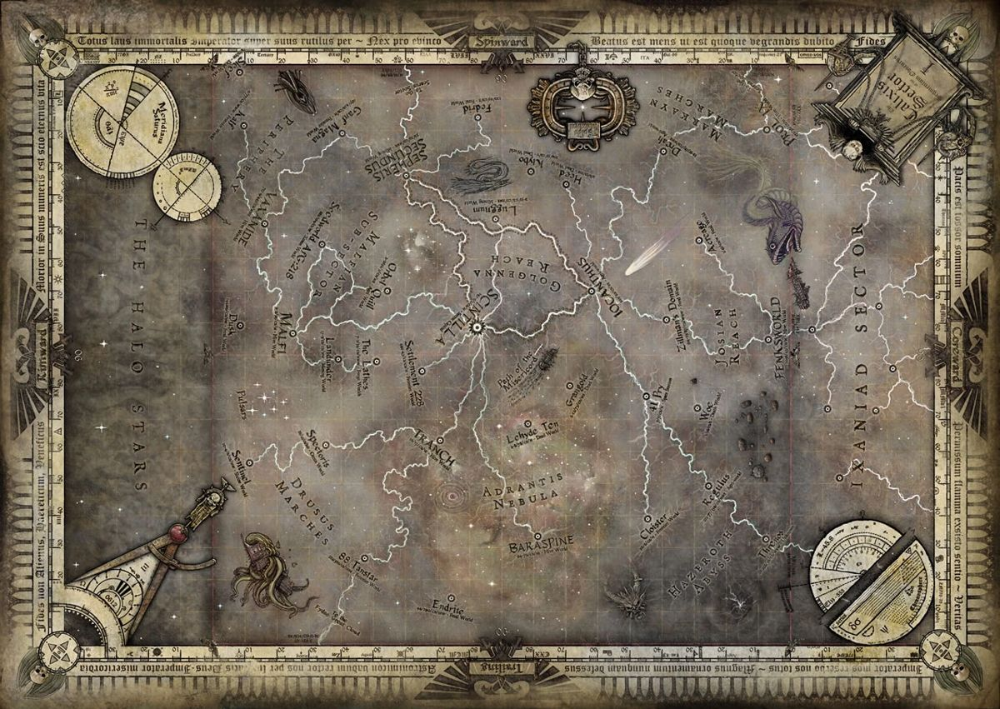

Calixis Sector
| Calixis Sector | |
|---|---|
 Chart of the Calixis Sector, showing its worlds and the names of its sub-sectors Artwork © Games Workshop | |
| Segmentum | Segmentum Obscurus |
| Sector capital | Scintilla |
| Sub-sectors | Adrantis, Drusus Marches, Josian Reach, Malfian, Golgenna Reach, Periphery, Hazeroth Abyss, Markayn Marches |
| Notable worlds | Scintilla, Hive Tarsus, Hive Sibellus, Ambulon, Malfi, Vaxanide, Sepheris Secundus, The Lathes |
| Governing body | The Lord Sector Calixis and the Lucid Court, with the Calixian Conclave of the Inquisition |
| Status (815.M41) | Beset by Ork invasion on its spinward front, heretical cults, the Tyrant Star and the Fydae Strain |
The Calixis Sector is an Imperial sector of the Segmentum Obscurus on the northern edge of the known galaxy, close to the Eye of Terror. It was conquered by the Lord Militant Golgenna Angevin during the Angevin Crusade of the 39th millennium and was formally constituted as a sector in 384.M39. It holds many heavily populated and important worlds, although it lies a great distance from the Imperium's core, and it must ultimately fend for itself.[1][2]
The sector is bounded by the Fydae Great Cloud on its trailing edge, by the Scarus Sector to spinward and the Ixaniad Sector to coreward. To rimward lie the frontier stars of the Halo Stars, where the Koronus Expanse lies. Calixian records describe it as a sector that must "ultimately fend for itself", since the great fleets of Terra rarely reach it.[2]
History
[edit]Angevin Crusade
[edit]The sector was won by the Angevin Crusade, led from 322.M39 by Golgenna Angevin, a praetor of the Terran Court raised to Lord Militant. The crusade fought in several phases, the last of which opened a second front in 359.M39. After a stalled advance and sustained Ork attacks during the Bleak Years (363–369.M39), and the death of Angevin in 372.M39, the campaign was completed in 384.M39 with the defeat of the Yu'vath and the Bale Childer and the Exterminatus of their homeworlds.[2][1]
The first Lord Sector was Drusus, one of Angevin's most capable generals. Drusus governed until his death in 417.M39, and the General Synod of Terra of the Adeptus Ministorum declared him a saint in 502.M39. Some accounts say that in 367.M39 he was struck down by an assassin sent by rivals among Angevin's generals and then rose again, an event many take as a miracle.[2]
Early centuries
[edit]The sector's trials in the 40th millennium included the Threefold Curse of 123.M40, in which two watch-stations and a capital ship taskforce of Battlefleet Calixis were destroyed in the outer Hazeroth Abyss, and the White Sorrows (552–570.M40), a series of raids on the Periphery by Drukhari corsairs. In 709.M40 the Hive World of Tanis was visited by a baleful black stellar phenomenon, the Tyrant Star, and in 738–741.M40 the Hive Worlds of the Gelmiro Cluster fell into sedition during the War of Brass. Calixian chronicles record the Macharian Crusade in this millennium, as 387–401.M40, although other Imperial records give it as 392–399.M41.[2][1]
The 41st millennium
[edit]In the 41st millennium the sector suffered many crises. Chaos cults flourished on Malfi under the House of Koba, whose Reign of Terror (428–479.M41) is recorded as the most brutal tyranny in the sector's history. The Khornate cult of the Pilgrims of Hayte forced a bloody end to Malfi's political divisions in 499.M41 and, though defeated, was not destroyed. The mining colony on Mara was abandoned in 768.M41 amid great loss of life, and the region was quarantined by Inquisitorial edict.[2]
The Tyrant Star appeared again in 389.M41, when the Asteroth Mining Colony in the Drusus Marches fell to rebellion and mass suicide after a visitation. Further visitations followed at Snowden's World in 503.M41, near the death world of Vigil in 742.M41, at the feral world of Endrite in 748.M41 and at Zillman's Domain in 807.M41. The Inquisition treats the Tyrant Star as a single prophesied threat.[3]
The Fydae Strain was first confirmed on the mining colony of Sutters Rock in 724.M41, and in 742.M41 the Damocles Gulf Crusade became the first military conflict between the Imperium and the T'au Empire. In 814.M41 the Ork WAAAGH! of Ghenghiz Grimtoof struck the Periphery, opening the Spinward Front, for which Sector Governor Marius Hax mobilised the sector's military reserves.[2]
Geography
[edit]
The sector is divided into eight sub-sectors. The Golgenna Reach, the territory won in the Angevin Crusade's "Reaping of the Emperor's Wrath", holds the capital, Scintilla. The Malfian Sub-sector, ruled from Malfi, lies rimward and spinward of Scintilla. The Hazeroth Abyss holds the cold worlds of Mara and Ice Station Mara, and the Drusus Marches hold frontier colonies such as the Asteroth Mining Colony. The Periphery faces the Orks of the Spinward Front. The remaining sub-sectors are Adrantis, the Josian Reach and the Markayn Marches.[2]
Beyond the sector's edge, the isolationist voider families who settled the Meratis Cluster in the middle of the 38th millennium became the Meritech Clans. They seceded from the Imperium in the Meritech Wars (211–226.M41).[2]
Notable worlds
[edit]The sector capital, Scintilla, is a Hive World that supports the largest population in the sector. It is dominated by two vast hive cities, Hive Sibellus and Hive Tarsus, and the "offspring" communities of Ambulon and Gunmetal City add to its weight. Sibellus is the larger and the seat of political power and manufacturing, and Tarsus is a mercantile hive that controls all off-world trade. The Lucid Palace and the Cathedral of Illumination are famous landmarks, and the Ordos Calixis of the Inquisition are based in the Tricorn Palace.[2]
Together with the mining world Sepheris Secundus, an extreme feudal world whose serfs and barons have been through numerous revolts, and the war-torn Agri-world of Iocanthos, Scintilla forms a triumvirate of worlds essential to the sector's survival. The Lathes, three planetoids at the hem of the Malfian Sub-sector, are the sector's foremost Adeptus Mechanicus Forge Worlds, granted to the Mechanicus by Drusus in 380.M39. Malfi commands the Malfian Sub-sector.[2]
The sector also holds the Shrine World of Drusus, a barren world at the rimward limit of the sector that is dedicated to Saint Drusus and is a place of pilgrimage for the Imperial Cult.[2]
Governance
[edit]The sector is ruled by a Lord Sector Calixis, who governs in the name of the Adeptus Terra from the Lucid Palace on Scintilla. His chief concern is that each world meets its tithe, and he heads a vast Adeptus Administratum infrastructure raising and coordinating the tithes of hundreds of worlds. In 815.M41 the Lord Sector is Marius Hax. The power of the Imperial adepta is rivalled by the Great Houses, the noble families and the Calixian corporations.[2]
The Calixian Conclave of the Inquisition brings together the Ordos Calixis, which are based in the Tricorn Palace on Scintilla. Its figurehead is the Lord Inquisitor Aegult Caidin, and it is the true ultimate authority in the sector. The Calixian Tyrantine Cabal is the body that hunts the Tyrant Star. Other Imperial servants of note are Cardinal Ignato of the Ecclesiarchy, the Lord Marshal of the Adeptus Arbites and the Senior Astropath of the Adeptus Astra Telepathica.[2]
Military
[edit]Battlefleet Calixis of the Imperial Navy guards the sector's space, and its ships defended Vaxanide against Ork fleets in 410–412.M41 and again in 507.M41. Its regiments are raised from the sector's worlds, and a great many of them have been sent through the Jericho-Maw Warp Gate to the Achilus Crusade in the Jericho Reach, a fact known to few of the sector's masters besides the Lord Sector.[2]
Timeline
[edit]| Date | Event |
|---|---|
| 322.M39 | Golgenna Angevin raised to Lord Militant and granted a writ for the Angevin Crusade |
| 367.M39 | Drusus is struck down by an assassin and rises again, according to some sources |
| 372.M39 | Death of Golgenna Angevin |
| 384.M39 | The Angevin Crusade ends; the Calixis Sector is formally constituted |
| 417.M39 | Death of Drusus; Marshal Corin Shultus succeeds him as Lord Sector |
| 502.M39 | Drusus declared a saint by the General Synod of Terra |
| 709.M40 | The Tyrant Star visits Tanis |
| 428–479.M41 | The Reign of Terror on Malfi under the House of Koba |
| 609.M41 | Larhanus Sult inaugurated as Lord Sector Calixis and restores the Lucid Court |
| 724.M41 | The Fydae Strain first confirmed at Sutters Rock |
| 731.M41 | Marius Hax becomes Lord Sector Calixis |
| 742.M41 | The Damocles Gulf Crusade begins against the T'au Empire |
| 768.M41 | The colony on Mara is abandoned and quarantined by Inquisitorial edict |
| 814.M41 | WAAAGH! Grimtoof strikes the Periphery Sub-sector |
| 815.M41 | The Time of Heroes begins, in which the fate of the sector is held to rest with the Ordos Calixis and their agents |
See also
[edit]
Notes
[edit]References
[edit]- ^ a b c [https://images-cdn.fantasyflightgames.com/ffg_content/dark-heresy/pdf/timeline.pdf Dark Heresy Apocrypha - Dark Heresy Timeline] by Alan Bligh (RPG Web Supplement).
- ^ a b c d e f g h i j k l m n o [http://archive.is/J6Pyw Fantasy Flight Games - The Calixis Sector].
- ^ Dark Heresy: Book of Judgement (RPG), pp. 12-15.